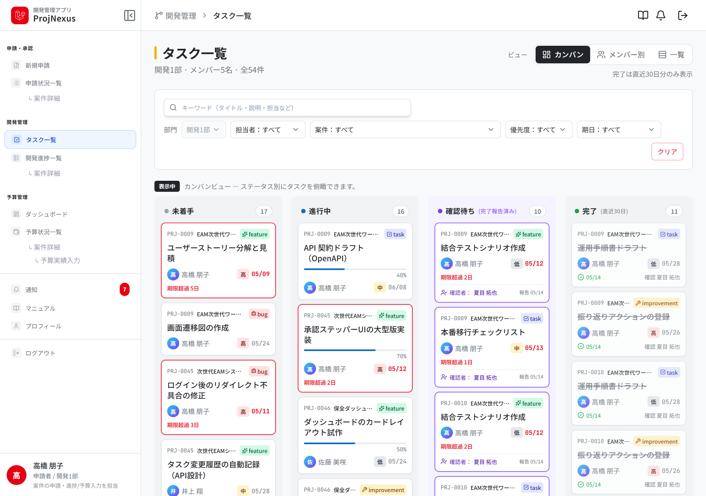

業務Webアプリ開発ポートフォリオ / 2026
ProjNexus.
申請・承認・開発進捗・予算を、
一つの業務フローへ。
経理・管理会計・事業推進で培った業務理解を活用。
データ設計から認可・画面・実装まで担った個人開発です。
Laravel 12
React 18
TypeScript
Inertia.js
MySQL
Laravel Cloud

代表画面：4状態カンバン
更新と状況把握を、同じデータで支える。
高橋 朋子 / Takahashi Tomoko
個人開発｜初期PoC 100時間枠＋継続改善
01背景と課題
管理手段が分かれると、転記・確認・集約が仕事になる。
これまでの経理・管理会計・事業推進の経験から、情報分断の課題を感じてきました。
分断は、転記と確認の手間を増やします。
判断に必要な流れも見えにくくします。
Pain 01承認の現在地が見えにくい判断待ちの相手を、個別に確認する。
Pain 02進捗を再入力・再集約する様式差と、本部への報告作業が残る。
Pain 03最新の執行状況を追いにくい進捗と予算を、別々に確認する。
現場経験から置いた設計仮説
単機能の置き換えだけでは、Excelに戻りやすい。
申請から開発・予算までを、同じ案件データでつなぐ必要がある。
題材：採用課題で提示された架空企業の業務シナリオ
02 / 10
02解決方針
案件を中心に、一度の登録を次の業務へつなぐ。
申請時のデータを、承認後のタスク・予算管理へ引き継ぎます。
関係者が、同じ情報から次の行動を判断できる構造です。
01 申請目的・概算予算・担当部門を登録する。下書き保存と取り戻しにも対応する。
02 承認部門・本部の承認を、一つの流れで管理する。却下と再申請も追跡する。
03 開発4状態でタスクを管理する。担当者・確認者・期限・履歴を持つ。
04 予算予算額と実績額を入力する。消費率は最新値から算出する。
4承認ステップ
承認の現在地と、次の判断者を表示。
3タスク表示
3つの表示で、管理目的の違いに対応。
VALUE
転記を減らす。ロールごとに、今見ること・今行うことを同じデータから判断できる。
狙いを示したものであり、実運用による削減率の効果測定は未実施
03 / 10
03利用者と権限
役割と責任を、「誰が・どのデータに・何をできるか」へ置き換える。
画面を隠すだけでは不十分です。
Laravel Policyで、サーバー側の操作可否を判断します。
部門境界と業務責任を、認可ルールにしました。
Applicant申請者
自分の案件を申請する。承認後は、タスクと予算実績を更新する。
Department Manager部門管理者
所属部門の申請を一次承認する。タスクと予算状況も管理する。
Headquarters Manager本部管理者
全部門の案件を最終承認する。全体状況を閲覧し、タスクは編集しない。
| 主な操作 | 申請者 | 部門管理者 | 本部管理者 |
|---|
| 案件の新規申請 | ● 自分の案件 | ● 自分の案件 | — |
| 承認・却下 | — | ● 自部門の一次承認 | ● 最終承認 |
| 案件の閲覧 | ● 自分・同部門の承認済 | ● 自部門 | ● 全部門 |
| タスクの編集・状態変更 | ● 担当・確認対象 | ● 自部門 | 閲覧のみ |
| 予算実績の更新 | ● 担当案件 | ● 自部門 | 閲覧のみ |
設計上のポイント
UIの表示条件と、Policyの判定を分ける。
URL直打ちや他部門データの操作は、サーバー側で拒否する。
実装：ProjectPolicy / ProjectWorkItemPolicy / Feature tests
04 / 10
04承認フローの設計
承認を、通過点ではなく説明可能なプロセスとして設計する。
結論だけでなく、誰が・いつ・どの段階で判断したかを残します。
却下後の再申請も、元案件との関係を保って追跡できます。
1監査証跡
承認者・段階・日時・コメントをapprovalsへ記録する。後から判断の根拠を説明できる。
2却下と再申請
元案件を履歴として残す。新しい案件をparent_project_idでつなぐ。
3自己承認防止
部門管理者本人の一次承認を省き、本部承認へ渡す。
4現在地の可視化
4段階のステッパーで、承認の現在地を示す。
承認済案件の実画面申請→部門承認→本部承認→承認済
主要データ：projects / approvals / parent_project_id
05 / 10
06予算・データ設計
経理の視点から、現在値・履歴・算出値を分けて持つ。
数字を複数の場所で重複管理しないことを重視しました。
入力する事実と、そこから導く指標を分けました。
最新状態と変更経緯の両方を扱えます。
本部管理者向け予算一覧案件別の予算・実績・消費率を同じ画面で確認
1. 入力値を正本にする
予算額と実績額を保持する。消費率は都度算出し、不整合を避ける。
2. 判断履歴を分離する
承認はapprovalsへ記録する。タスク変更はtask_historiesへ記録する。
3. 異常を視覚化する
消費率70%・100%で色を変える。注意すべき案件を見つけやすくする。
正規化の具体例案件本体に履歴を詰め込まず、承認・作業・予算変更を分ける。
主要データ：projects / project_budget_histories / task_histories
07 / 10
07技術構成と実装品質
業務ルールを、入力検証・認可・データ処理の各層へ反映する。
Inertia.jsを採用し、独立REST APIは設けていません。
画面操作は、ルートからController・Policyまで一貫して処理します。
入力検証はForm Request、データ処理はEloquentが担います。
FrontendReact 18
TypeScript
画面状態とフォームを管理する。表示切替も部品化する。
›
BridgeInertia.js
LaravelとReactを接続する。画面データはPropsで渡す。
›
BackendLaravel 12
PHP 8.2+
入力検証と業務処理を担う。認可・通知・履歴も管理する。
›
Data / DeployMySQL
Laravel Cloud
DB構造はマイグレーションで管理する。Laravel Cloudへデプロイする。
サーバー側認可
ロール・部門・案件状態・担当関係をPolicyで判定する。
状態遷移と履歴
承認・再申請・完了確認を状態遷移にする。変更履歴も自動保存する。
Feature tests
承認・再申請・閲覧制限・部門境界・履歴を検証する。
技術選定の見せ方技術の列挙ではなく、業務ルールをどの層で守るかを示す。
Source code: GitHub / Deployment: Laravel Cloud
08 / 10
08開発プロセスとAI活用
仕様・モック・テストを先にそろえ、AI支援を判断可能な開発にする。
要件・設計判断・受入基準・最終レビューは、本人が担当しました。
AIは、比較検討・実装補助・不具合調査・改善に活用しました。
01 Discover業務を分解責任とデータの流れを整理した。
02 Specify仕様を正本化設計判断を仕様書とER図に残した。
03 Prototype先に画面化9画面のモックで導線を確認した。
04 Implement差分を実装AIの差分を読み、修正した。
05 Verify受入れ確認権限境界と業務フローを検証した。
- 課題の解釈、要件、優先順位、スコープを決める。
- DB・認可・UIの設計判断と受入基準を管理する。
- 生成差分を読み、テストし、最終責任を持つ。
- 仕様の言語化や設計案の比較材料を作る。
- 実装案、差分修正、テスト作成を補助する。
- 不具合原因の仮説とリファクタリング案を提示する。
初期PoC時の作業記録に基づく数値
09 / 10
09まとめ
業務を理解し、データと権限に分解し、
説明できる実装へつなぐ。
業務理解
分断を、判断フローの問題として整理しました。
設計判断
監査証跡や再申請を、データと状態遷移へ反映しました。
自力実装
画面からデプロイまで、主要工程を自ら構築しました。
現在の到達点
申請・承認、認可、進捗、予算、通知・履歴を実装しました。
実データ集計、運用フィードバック、テスト拡充を続けます。
※本作は、採用課題で提示された架空企業を題材とした個人開発です。
画面内の名称・金額・利用者はデモデータです。
実運用による工数削減率などの効果測定は行っていません。
デモとGitHubは、2026年8月13日時点で応答を確認しています。
ProjNexus Portfolio Case Study / Takahashi Tomoko
10 / 10